红石炮前沿技术整理及讲解
来源：红石炮前沿技术整理及讲解（完成，初稿）.docx
大致目录

除注明外，内容通常Java版、基岩版通用
红石炮前沿技术整理及讲解
前置技术：①（基础）PS017未完成的教程：https://tieba.baidu.com/p/6455393182
- 矢量理论及其三维拓展（原贴地址https://tieba.baidu.com/p/5903986548）by q43
③【为精准而鸣起的丧歌】高度衰减源码解析和基于碰撞箱的压爆现象（原贴地址https://tieba.baidu.com/p/5819939000?pn=1）by q43
（注：基岩版为升爆现象，高度差为0.4287491）因此传统方法不可实现满足强矢量理论/在空间直角网格上打点的三维矢量炮
来自2024年的总结：若全程在空中飞行的TNT的初速度为(νx,vy,νz)，则TNT的位移为(kνx,kvy-h,kνz)，k和h的值与且仅与飞行时间t的值正相关（可以计算得到其精确值）
- 沿轴特性
讲解视频：https://www.bilibili.com/video/BV16t411F7Bv By 伊芙-诺蕾姬
文字：沿轴特性：对于TNT实体运动，我们知道，当它撞倒障碍物时，会损失有障碍的轴的速度（比如撞倒天花板就会没有Y轴速度），对于直线（俯视）飞行的TNT，就和现实是一样的了，但是对于斜向飞行的TNT，Mojang的判定方法不再是把TNT当做（俯视图）直线飞行，而是先运动Y轴，再运动XZ轴，具体参考潜影贝导弹一拐一拐的飞行方法，这个时间具体是1gt（0.05s），也就是（这里是为了严谨一点，看不懂完全不管也无所谓）抛开优先级和微时序，游戏最小的处理时间。好了说到这里，这有什么用呢？我们知道矢量炮一发只能打一个方向，因为只能提供一组精确的XYZ推力，所以为了提高效率以往都是使用高频（600/1200）打击。但是沿轴特性可以做到从一个炮口同时打多个方向的炮弹，比如XZ推力设置为9/12，Y轴堆一大堆TNT，1gt能飞256格上头那样（雾），这时候它会先飞256格，再运动XZ，没有障碍物则再飞比256小一些的高度，而如果有障碍挡住了Y轴，比如Y=188有一个可爱的石英块，那么这个TNT会在Y=187开始类平抛（这个意思），Y轴速度清零，那么如果我在Y=187下面做10个这样的结构，设置不同的XZ推力，那么一炮下去就是十个自定义的点位，如果上电磁弹头，好了那就是十束TNT，所以整个名字叫齐射（雾）（注：如果改变障碍的位置，就可以改变TNT开始做类平抛运动的高度，进而改变弹头爆炸的高度。你可以建造一个很高的塔，用活塞控制炮口上方不同高度的障碍物是否推出（or用栅栏门），从而制作沿轴三维矢量炮）
以上文字引用自成就的沿轴特性-二维矢量-齐射电磁炮发布帖，原贴地址：https://tieba.baidu.com/p/6531519044
视频地址：https://bilibili.com/av92927292
附图：沿轴特性-二维矢量-齐射电磁炮
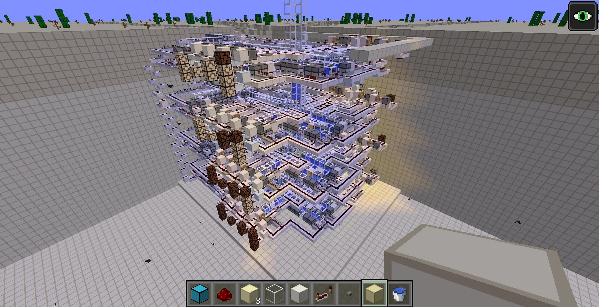
二、弱加载炮
弱加载区块位于强加载区块的边缘。在弱加载区块内的TNT可以受到推力但不会进入爆炸倒计时。
该类炮可按是否使用EM特性分为两类。注意文档中表述的EM特性仅适用于Java版，基岩版的EM特性与Java版完全不同，目前无法用于制作弱加载炮。
所以Java版可适用全部两种弱加载炮，基岩版只可适用不使用EM特性的弱加载炮。
与不使用EM特性的弱加载炮相比，使用EM特性的弱加载炮理解起来略难，瞬间发射瞬间爆炸且可穿墙（前者发射后需4秒爆炸且不可穿墙），但射程是前者的数十分之一，开炮瞬间也更卡。
如果读完A或B其中一项后还不理解可以读另一项，这两类炮的理论基本是通用的，只需要注意前后的差别。
A-不使用EM特性的弱加载炮
相关展示视频：
https://www.bilibili.com/video/BV1Z44y1q7uz （ps017）
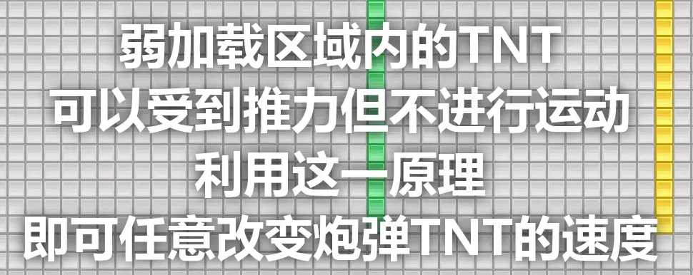
视频内即有讲解↑
为了让不同的炮弹TNT的速度不同，我们可以在一个不断引爆推进TNT的时间序列中在合适的位置插入TNT。
例子如下表：
（在表格中从上到下的顺序即时间从先到后的顺序）
| 推进TNT的爆炸提供的速度分量 | 弹头TNT被发射，1表示被发射 | 该时刻被发射的弹头TNT在蓄力结束后具备的速度 |
|---|---|---|
| 1 | +Y | |
| +Y | ||
| -4X | ||
| 1 | +4X | |
| +X | ||
| 1 | +3X | |
| +X | ||
| 1 | +2X | |
| +X | ||
| 1 | +X | |
| +X |
总结：弹头的速度，是发射出之后爆炸的所有推进TNT给它速度的矢量和。
B-使用EM特性的弱加载炮
在这种炮中弹头的速度，是在弹头TNT更新之前更新的所有推进TNT给它速度的矢量和。
EM特性，全称TNT运动计算和爆炸计算不统一
使用EM特性的相关展示视频：
https://www.bilibili.com/video/BV1r54y1D7Cn (西冷淀磁炮) 三维EM矢量电磁炮（一炮清理区块）
原理解析：前置：上古技术文档https://tieba.baidu.com/p/5904990761（q43）
在弱加载区块中，由于TNT不会进入倒计时，通过控制TNT被发射出来的时间，我们可以很方便地控制它们进入实体更新队列的顺序。每一个弹头TNT都会受到在它之前更新的推进TNT的推力，从而在远离炮体的地方爆炸，位移是每个在它之前更新的推进TNT将它炸飞的位移的矢量和。所以，如果我们交替地更新推进TNT和弹头TNT，每一个弹头TNT都会在越来越远的地方爆炸。这就是一维0tEM电磁炮的原理。
在二维0tEM电磁炮上，事情变得复杂了一些，牵扯到沿轴特性。沿轴特性在java版较低版本的运动顺序为yxz，在高版本的运动顺序为先y后xz轴中速度较大的一轴最后为xz轴中速度较小一轴。但如果你不想穿山（如果想，请结合具体情况分析，不要让TNT在沿轴运动的过程中撞上还未打穿的山体而中道崩殂），只想在水平地面上打弹坑，则不需考虑那么多。你可以选择交替更新x（或z）轴上的推进TNT和弹头TNT，然后交替更新几组z（或x）轴上的推进TNT和弹头TNT完成换行操作，之后交替更新x（或z）轴反方向上的推进TNT和弹头TNT，周而复始；你也可以在交替更新x（或z）轴上的推进TNT和弹头TNT之后更新与原先正方向上的推进TNT等量的反方向上的推进TNT，抵消掉用来打第一行的推进TNT带给弹头的推力，然后交替更新几组z（或x）轴上的推进TNT和弹头TNT完成换行操作，周而复始。通常推荐的是第二种方法，虽然消耗更多TNT但白嫖TNT不存在浪费一说(
三维0tEM电磁炮类似于二维，打完一个二维平面之后换行再打一个周而复始就可以了。
以上讲述的是无差别打击的0tEM炮。显然我们可以知道任何一个弹头TNT的位移是每个在它之前更新的推进TNT将它炸飞的位移的矢量和，所以每个弹头都与它的爆炸位置对应，我们只需要控制这个弹头是否被发射/复制出来，就可以控制这个位置是否有TNT爆炸。一种很好的控制方法见前面ps017的展示视频，虽然这原本对应不使用EM特性的弱加载炮，但这种控制方法是通用的。
三、快速反应炮
注：最早的快速反应炮以及发展阻碍最小的那类快速反应炮与本文第五部分所讲述的高频电磁弹夹有千丝万缕的联系。它们的本质都是给TNT集束一定的延时。早期快速反应炮链接：
https://tieba.baidu.com/p/6282081775 by ps017
https://tieba.baidu.com/p/6473957825 by ps017
另一种早期快速反应炮链接：
https://tieba.baidu.com/p/6293452670 by 白凛
2020年后的快速反应炮：
1.矿车瞬爆原理
https://www.bilibili.com/video/BV1P7411D7LR by ps017
2.改变弹头与推进间距
https://www.bilibili.com/video/BV1AG4y1K7cH by ps017
四、更新颖的全象限炮口
若还不知道沿轴特性，请观看part1给出的链接中的讲解视频。
全象限的历史沿革（这一部分讲述2020年之前的科技发展）
全象限即在平面直角坐标系上以炮口所在点为原点，被x、z轴分割开的四个象限均可打击。
人们起初并不了解沿轴特性。他们似乎认为为了实现全象限打击，弹头TNT的四周不应有固体方块阻挡。
普通的正交炮体（如
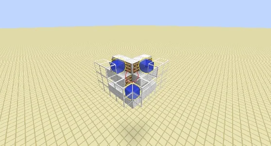
，图片引自q43）如果想要实现全象限打击，弹头TNT前后左右都必须能受到推进TNT的推力，这必然使得弹头四周有所阻挡。所以想要实现全象限打击必须革新炮体。
传统的解法如下。
- 不完全空爆
弹头被发射时在空中，而推进药有方块支撑。
最古老的解法，始见于Dim的矩阵定位矢量炮V4-Templar中。类似于这样（图片演示推进药爆炸瞬间的情形）（图示省略水和挡水的方块等，下同）
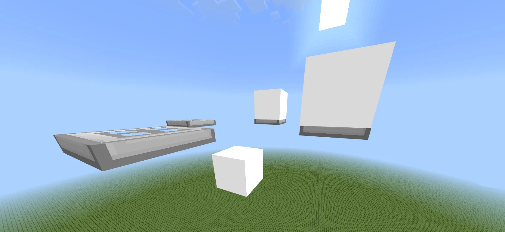
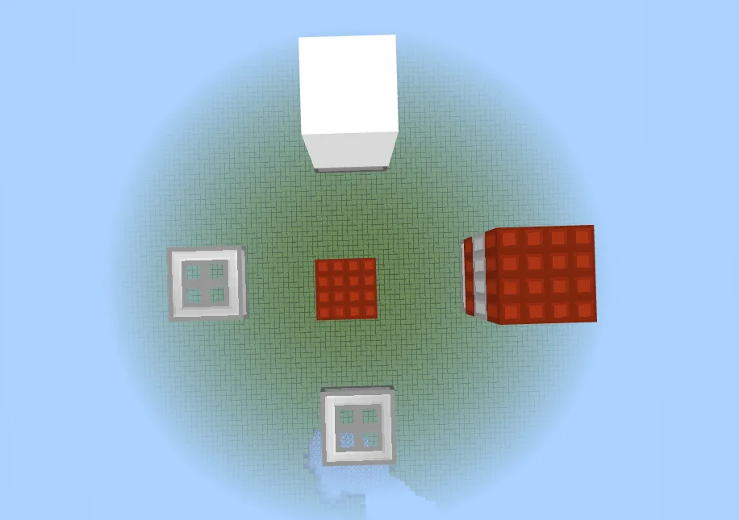
缺点是，由于推进药提供了一部分向下的速度分量，TNT会被“按”到地上，造成严重的点阵变形，且射程有上限。同时，支撑推进TNT的方块阻挡了爆炸，降低了射程。如：
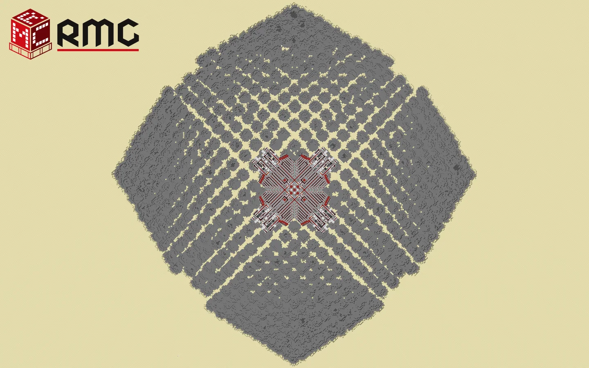
（图自RMC官网）
- 四炮口平抛
将全象限拆分为四个单象限炮口，相邻单象限炮口之间共用一组推力。
（图中红色TNT代表推进TNT，青色TNT代表弹头TNT）缺点较结构较复杂
青色TNT是教育版独有的水下TNT哦
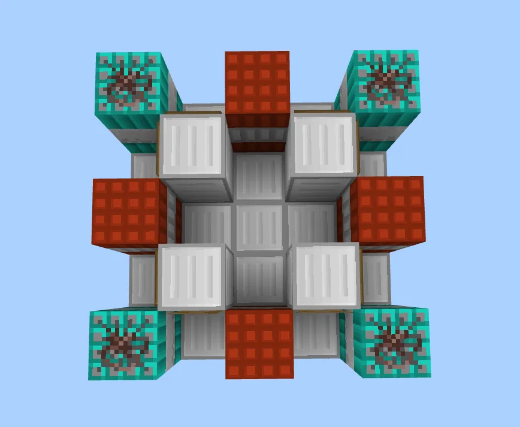
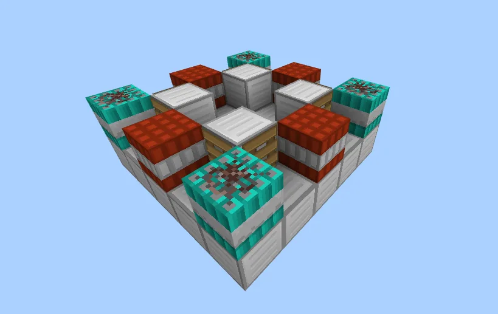
当然每次发射只会启用一组弹头TNT和对应的两组推进TNT
展示视频：https://www.bilibili.com/video/BV1Hx411g7NB by 纷飞的花火
- 独立炮口
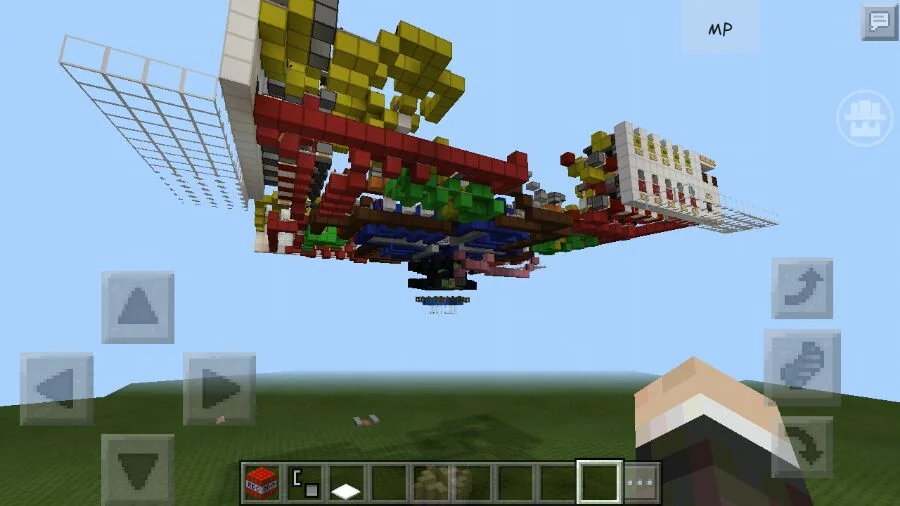
上图源：鑫森淼焱垚（他的版本为PE，即非常老的手机版，该版本既无升爆也无压爆）
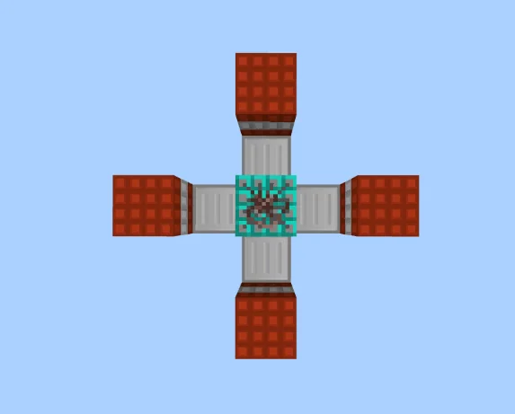
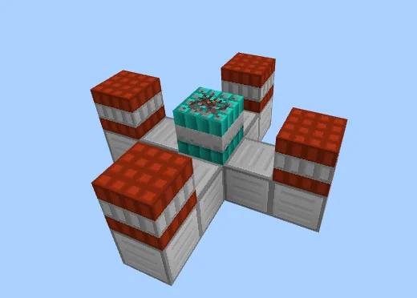
弹头和推进TNT都从炮体落到这一平台上，然后爆炸推进。BE（BedrockEdition，基岩版的省称）由于升爆特性，无法使用这种炮口。
由于EM和摩擦，这种炮口不是特别精准，甚至可能很不精准
- 空爆折射
最酷炫的方案。
双象限打击的三代折射炮，适合观察原理：https://www.bilibili.com/video/av8950113 by 恩氟烷瑞
全象限折射炮：https://www.bilibili.com/video/BV1Sx411a7uV by 恩氟烷瑞
非常非常帅气，将推进药和弹头都打到或下落到空中相应位置之后推进药爆炸推动弹头。由于EM等原因不是特别精准（无论BE还是Java版，BE如果不用细雪或者用复杂的计算来特殊处理，将极其不精准甚至无法使用）。
沿轴特性发现后，大佬明白只要弹头TNT的y轴方向速度足够大，就可以绕过附近的障碍，所以正交炮口又可以用来制作全象限炮了。不过，为了提供足够方向的Vy，弹头下方需要一定量的推进TNT。还看不明白的看前面part1的文字讲解。
以下为正文：2020年后全象限的新解法
- 将沿轴正下方的推进移至斜下方
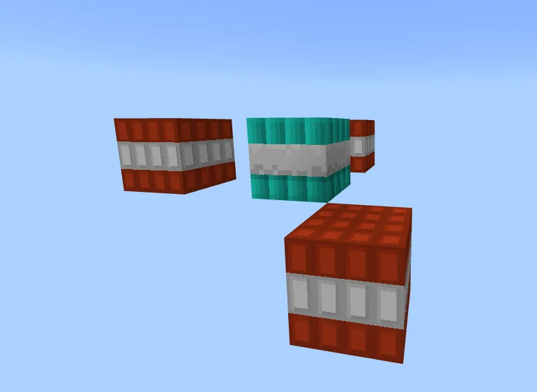
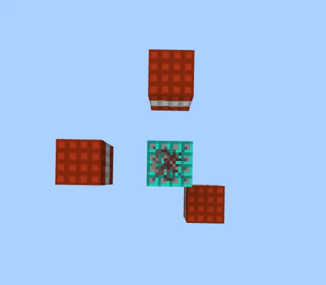
改良的利用沿轴特性的解法。斜下方的推进TNT，既可以提供Vy，又可以提供负的Vy和Vz，使得我们改变两组TNT的数量，就可以实现全象限。不过，推进TNT的利用率要大大低于下两种方案。
（二）活塞阻拦
问题来源：较多的推进结构可能并不需要同时工作，而空间占用却过大，导致布线困难以及拓展性差（比如你想换供弹结构来将普通矢量炮换成电磁炮，或者做成单片结构来做沿轴拓展）
方案思路：如图，四条黑线两组为推进弹药供给，两组为弹头供给，当
A为弹头，BC为推进
B为弹头，AD为推进
C为弹头，AD为推进
D为弹头，BC为推进
我们发现，AD与BC是固定组合
利用活塞控制I、II、III、IV的方块来拦阻TNT实体，控制方位，则有阻拦推进弹药的两个方块（I与III或II与IV）控制结果必反相（异或结果为1）
对于弹头，控制其进入两个管道的一侧可以利用活塞来完成（比如默认为进入上方，给0信号就是上方，给1信号推动活塞进入下方），之后用方块阻拦控制另一个方向上的（比如上文案例，这里就控制左右）位置
因此，推进结构由四组换成两组，供弹仍为一组，节省了空间。
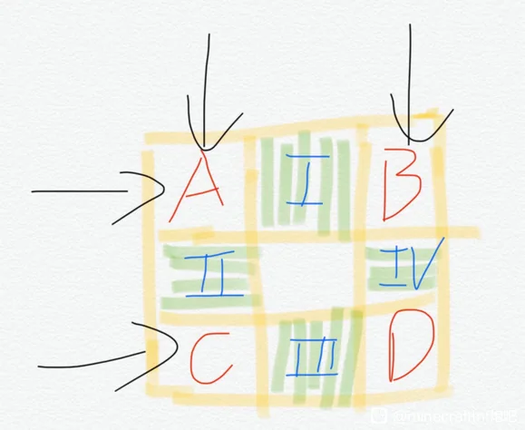
引自：https://tieba.baidu.com/p/7349712623 by 成就
（三）栅栏门阻拦
仍然是利用沿轴特性的解决方案。栅栏门对实体的高度是1.5格，并且在基岩版内，上半格不对爆炸推力有任何阻挡。（Java版待测）
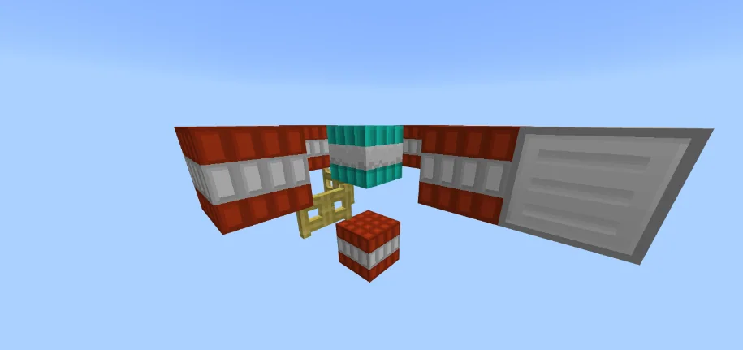
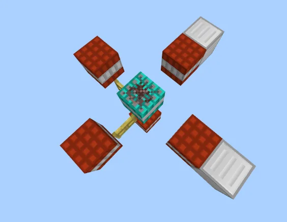
推进TNT自图中的左边（分别左前和左后）飞来。关闭栅栏门时，推进TNT被栅栏门阻拦，停留在左边；打开时推进TNT飞过栅栏门，在右边撞到铁块而停下。两个栅栏门开闭的四种组合，恰好对应着四个象限，故这种方案实现起来最为简易高效。
五、高频电磁弹夹
高频电磁需要以极快的速度供应电磁弹头，而电磁弹头由延时不同的TNT组成。
所以我们让不同的TNT以不同的延时到达同一点，在流水线上对构成每一个电磁弹头的TNT都执行这个操作，就可以做成高频电磁弹夹。
由于流水线的运行速度和发射频率一致，一些延时方法不方便使用。目前通常使用四种方式：下落（活塞推动+下落，水流+下落），气泡柱，传送带（活塞传送带或者不断用TNT推进的传送带，用TNT推进的传送带每推一次需要弯折一个直角防止推过头）
再次偷懒引用https://tieba.baidu.com/p/7349712623 by 成就 的内容：
双1200供弹结构：
问题来源：解释一下双1200，众所周知MC的游戏刻是0.05s，因此1min内最大爆炸次数只能是1200，即为1200频。双1200指以1200频发射电磁炮弹头，而电磁炮弹头爆炸频率也是1200频（如果做打印机RAM打点那可看作最小时间长度是0.05s）
这种炮有两个难点，一是炮口结构，这次不说这个；二是供弹结构，本楼讨论对象。之前有考虑过弹仓供弹结构，但是要么难以连续供弹，要么结构过于复杂，难以堆叠、对TNT需求量太大，带不动。
方案思路：采用下坠式供弹，利用下坠制造延迟，并在TNT到达收集处时以1gt内位移足够大的推动收集，实现隔离收集。
这里贴出TNT下坠时间表（图一）从左到右：
下坠时间（gt）累计位移 时刻位移 最大落地高度 最小悬空高度 该时刻可下坠格数
由表格标色部分看出最适合延迟范围，由此计算可行性
大致结构如图二
可行性验证如图三
黑笔代表1200频时数据，红笔600频，显然由相似，若要下坠TNT不受收集时爆炸影响，必须采用600频合成1200频且使用半砖阻碍爆炸射线，否则由勾股定理和TNT爆炸速度公式，以及奇奇怪怪的受爆炸速度衰减，加上收集爆炸能使所有TNT1gt到位，爆炸也不弱（这里肯定没说清楚，我只能都提一下，不清楚的、有意见再回复吧）
两个600汇集到中间后向下输出弹头
值得一提的是，这种结构是可以RAM编程打点的，由于比较器2t一次的激活，可以直接用电平触发，通过时间长短控制脉冲次数。
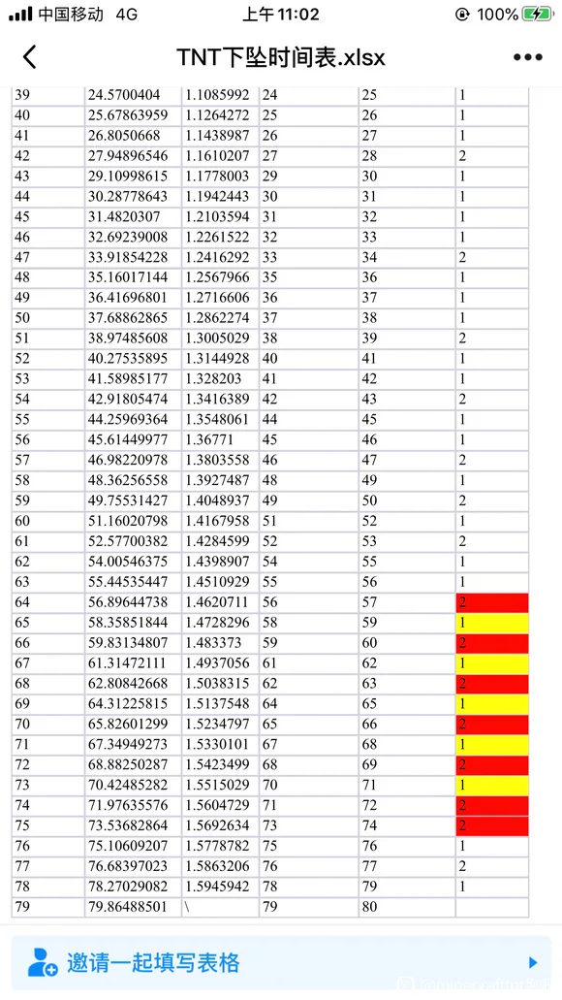
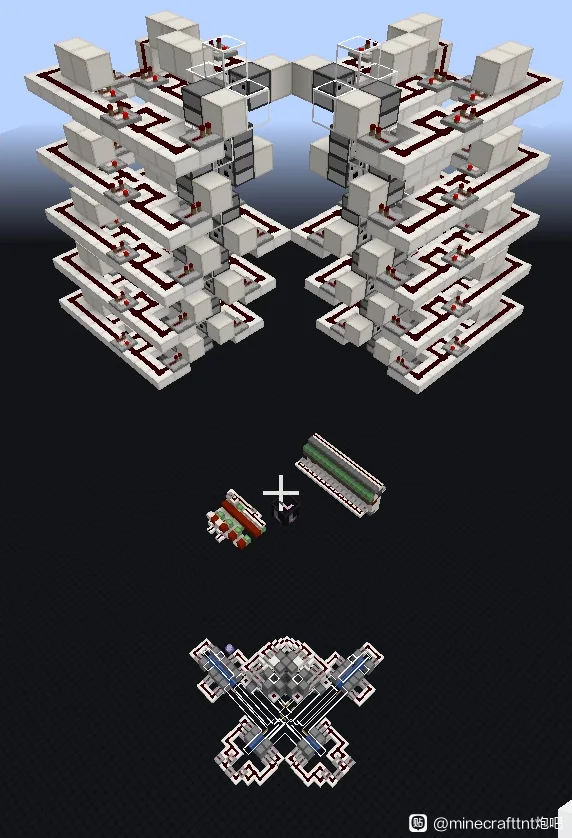
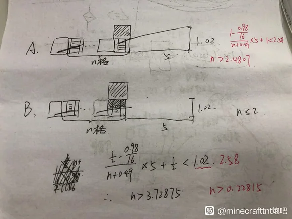
这属于精准下落式。如果不去管下落时间、延时长短，认为能打出去连爆就算高频电磁，就是宽松下落式，下落也可以改成气泡柱、水流和传送带等方法。
六、细雪急停
细雪特性：当TNT在Gametick开始时处于细雪中时，本Gametick的运动正常，但该Tick的运动结束后速度清零
也就是说如果我们让弹头TNT在细雪中被打出来，它会运动1gametick，然后停下。
这一特性加入和发现都很晚（2023年下半年），尚未完全开发。
目前应用主要有：
- 直角折射，即折射后的发射方向和第一次发射方向相垂直
也可以做到任意角折射
- 在基岩版中实现相当精准的折射(BE由于存在特殊的EM，常规方法折射通常极不精准)，缺点是由于只飞行1gametick，第一段的射程很短
- 用在高频散射炮的供弹仓中，堆叠更强的火力
七、抵消真三维
可能是最为原教旨的三维矢量炮实现方案。
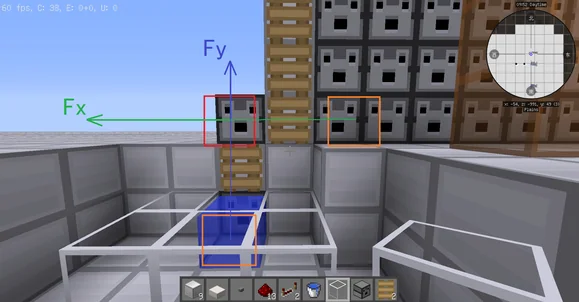
图片摘自：【教程】TNT炮：从入门到入土（即卷首的前置技术①）
当然mc没有力的概念，只有速度的瞬时变化，不过用力来帮助理解是完全没有问题的。图中，弹头右边的推进TNT提供了Fx（也就是νx），下方的推进TNT提供了Fy（也就是vy）。但事实并非如此（原教程为方便新手理解省略了这一点）由于前置技术③中所讲到的压爆或升爆，右边的推进TNT也会提供一定量的vy造成打点不准（相对于空间直角坐标系而言）。
目前四种制造准确的三维矢量炮的方法（计算消除侧方推进TNT消除的vy；抵消；折射；沿轴）中，后两种都是更改“炮口”，直接绕开了这一问题。而前两种方法是跟这个问题硬碰硬。
计算消除，即算出侧方TNT提供的vy，除以弹头下方每个微调TNT所能提供的vy，得出微调TNT的数量，这样就成功抵消掉了侧方TNT的压爆。但这种方法在升爆的基岩版使用会比较奇怪，而且要求一定的数电水平。
抵消：通过初中数学我们知道，由于升爆/压爆差值一定，当推进TNT和弹头TNT的水平距离一定时（且均无阻挡），无论推进TNT在弹头TNT的什么方向，每个推进TNT给弹头TNT的vy是一定的。如果我们让这个vy在打任何位置时都保持不变，打点时我们就可以忽略它。也就是说我们需要让推进TNT的数量保持不变。
正交炮口
形如此（省略水和阻挡TNT的栅栏门/TNT等）
正常情况下我们想打平面上坐标为（5,7）的点，我们需要给弹头TNT以（5νx,7νz）（这里νx/νz指的是一个推进TNT提供的速度）的初速度，那就要在-x方向放6个推进TNT，-z方向放8个推进TNT
在抵消三维炮中，为了打击同一个点由于我们让推进TNT的数量保持不变（假设是15,15），我们需要把（5vx,7vz）改写成（10vx-5vx,11vz-4vz），即在-x方向放10个TNT，+x放5个，-z放11个，+z放4个。简单的数学推导可以知道，它只能打击x和z轴坐标均为奇数的点，且TNT利用率不高。这都是它的缺点，前者可以通过微调和增加推进与弹头间的间距来弥补。
附：https://www.bilibili.com/read/cv6010181/ 基岩版TNT推进计算 by lin